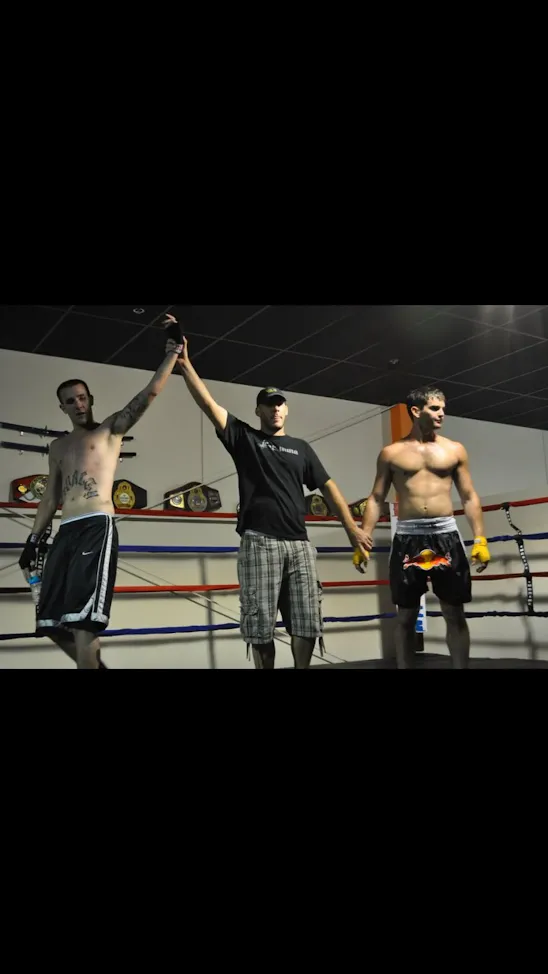

About
Why this site exists
I used to kickbox in college. I had exactly two exhibition fights and went 0–2 — which is either a perfect losing streak or proof that liking combat sports and being good at combat sports are two very different things.

I'm still a fan of combat sports across the board. Nothing gets me through an indoor run or a long ride on the bike like a great fight — the kind that stays competitive, keeps you guessing, and makes you pick up the pace without thinking about it. I built Best Fights because finding fights like that on YouTube is a slog. This is my curated list of ~100 action-packed fights worth watching while you sweat, with winners left off so you can stay spoiler-free.
— Gordon